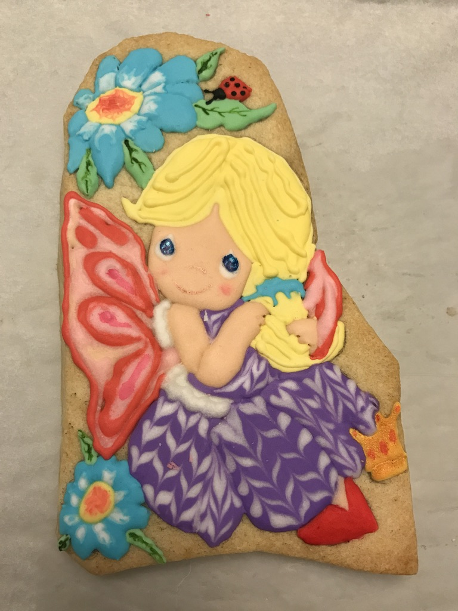
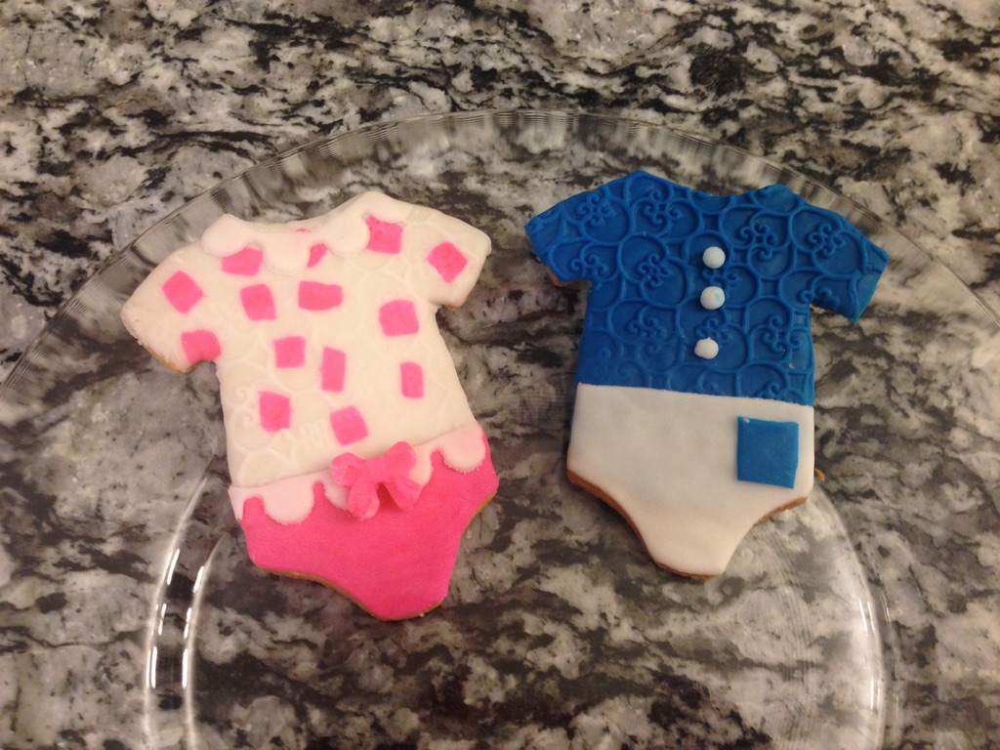
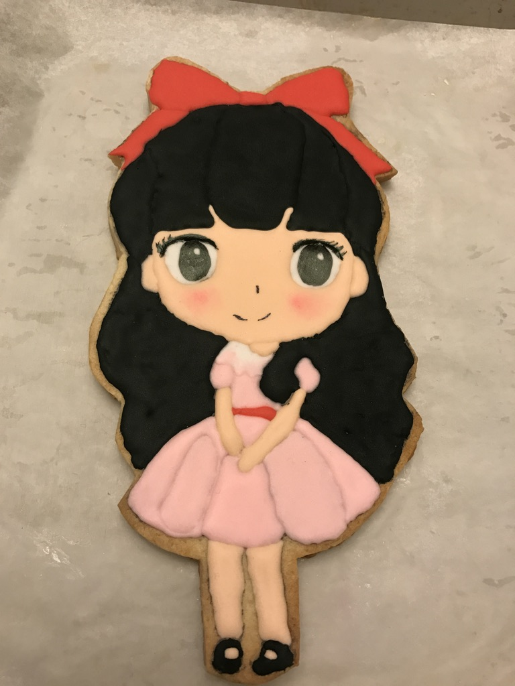
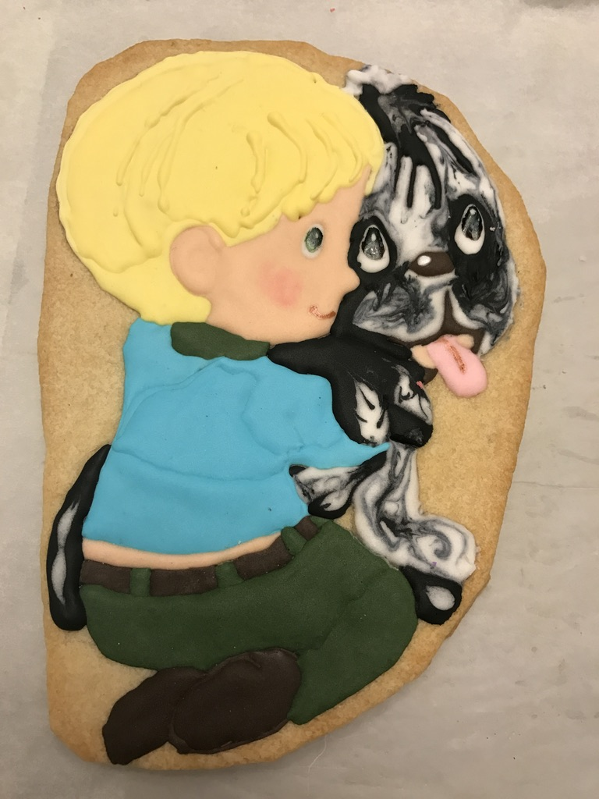
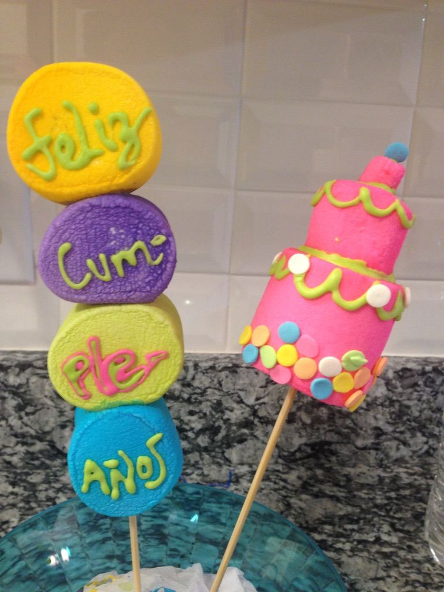
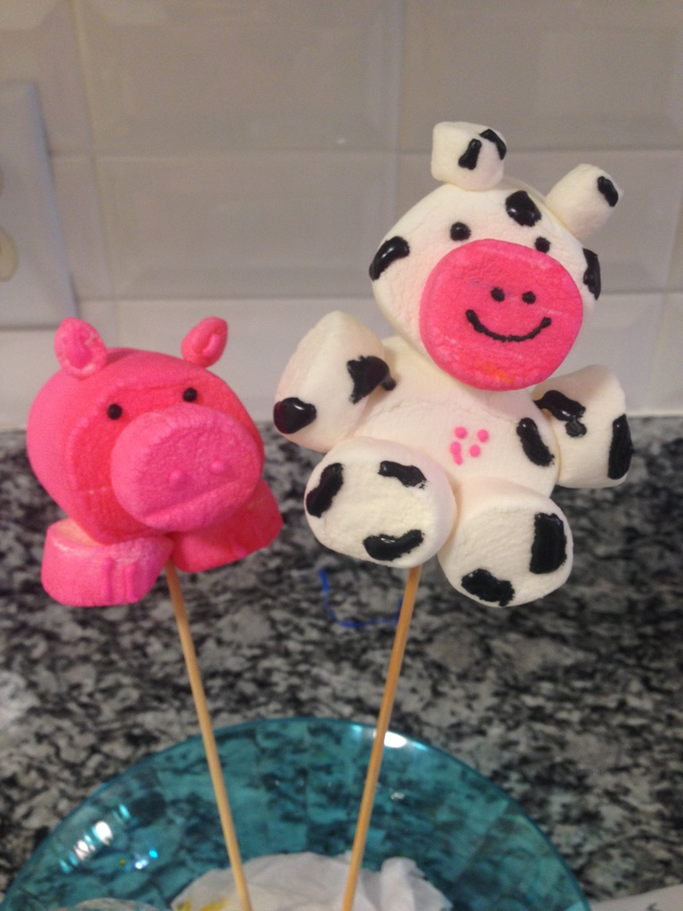
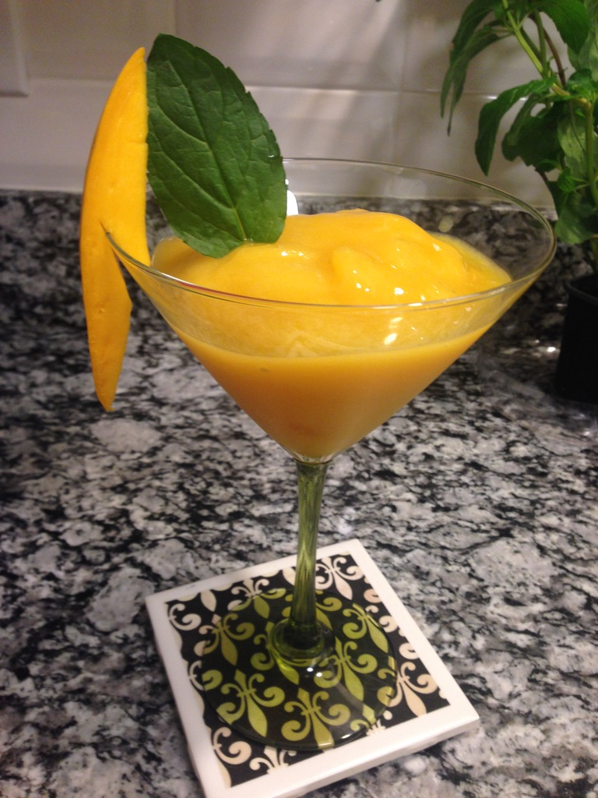
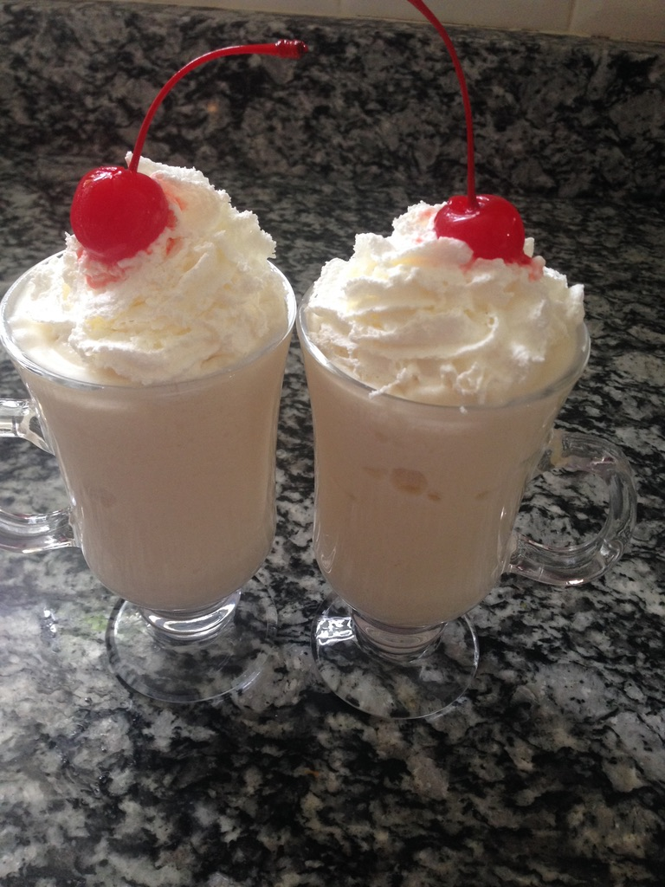
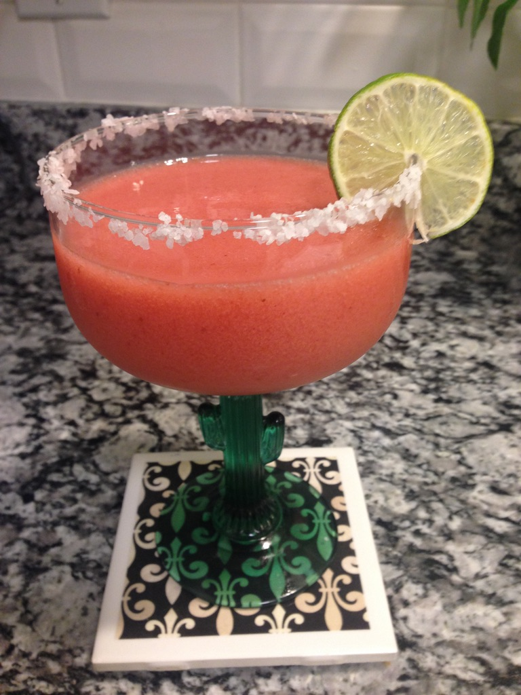

My favorites things to do...
One of my passions is to make artistic jello; I watched some videos and I took some classes online to learn how to make them and diferents tecniques. Here are some examples of what I have made:
One of my passions is to make artistic jello; I watched some videos and I took some classes online to learn how to make them and diferents tecniques. Here are some examples of what I have made:
Also, I love to make icing cookies and for some of them I used fondant
   I love to use diferent materials, here are some examples of marshmallow pops
 Also I have fun making some coktails!
  